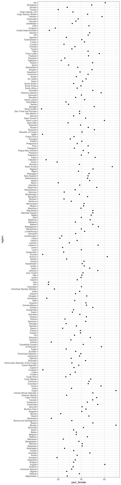

Today’s reading outlined reasons why norms in much of the Arab world, especially in collectivist societies, often limit women’s participation in sport and sporting events.
In this tutorial, we will explore participation by women in the Olympics over time and by country, particularly looking for patterns in the Arab world.
As you complete the activity, think about:
The data used here were scraped from www.sports-reference.com in 2018 by Randi Griffin, and then made available on kaggle.com. They provide information on individual competitors in Olympic games from 1896 to 2019, including sex and region (country).
The dataset is called olympic. Below, use the R function glimpse() to see which variables it includes (and the first few rows of data).
glimpse(...)glimpse(olympic)A statement on women in sport at olympic.org states that “The number of women athletes at the Olympic Games is approaching 50 per cent.” How has it changed over time?
Let’s view a bar graph and then an alternative graph showing proportions male and female olympians (variable Sex) by Year. (The two hints given in the exercise box below create two different graphs.)
First we have to make a new dataset with one row per year, and a column that gives the percent female.
sex_by_year <- olympic %>%
group_by(Year) %>%
summarise(perc_female = 100*prop(~Sex == "F"),
team_size = n()) %>%
ungroupgf_col(...)gf_col(..., data = sex_by_year)gf_col(perc_female ~ Year, data = sex_by_year)gf_point(perc_female ~ Year, data = sex_by_year,
ylab = 'Percent Female') %>%
gf_lims(y = c(0,100)) %>%
gf_hline(yintercept = 50, linetype = 'dashed',
color = 'grey')How would you describe the trend in female participation over time in the Olympic games overall?
What about differences by country?
Which countries do you expect to have the most, and fewest, female participants in the olympics?
Let’s look at just data for Games since 2000 for an initial look. First, we will use the filter() function to get just data where the Year is greater than or equal to 2000, and then we will compute the percent female by country much as we did before for the percentages by year.
since_2000 <- olympic %>%
filter(Year ...) %>%
...since_2000 <- olympic %>%
filter(Year >= 2000) %>%
group_by(...) %>%
summarise(perc_female = ...)since_2000 <- olympic %>%
filter(Year >= 2000) %>%
group_by(region) %>%
summarise(perc_female = 100*prop(~Sex == 'F'),
team_size = n())Now, we can graph the percent female athletes by country:
gf_point(perc_female ~ region, data = since_2000) %>%
gf_refine(coord_flip())
What a mess! With the countries sorted in alphabetical order, the plot is nearly impossible to read.
One solution is to instead sort by percent female athletes:
since_2000b <- since_2000 %>%
mutate(region = factor(region),
region = fct_reorder(region, perc_female))Now, we can make the graph as before. (See how much of the code you can remember and fill in without peeking.)
gf_point( ... ~ ..., data = ...,
ylab = ...) %>%
gf_refine(...)gf_point(region ~ perc_female,
data = since_2000b,
xlab = 'Percent Female') %>%
gf_vline(xintercept = 50, color = 'grey',
linetype = 'dashed') %>%
gf_lims(x = c(0,100))The reading suggests that other Arab countries, like Saudi Arabia, may have low female participation in the Olympics.
Is our dataset consistent with that claim? It would be easier to see if we could highlight data points from countries in the Arab world.
Let’s create a new variable that identifies whether a country is part of the Arab world or not.
One definition of the Arab world includes the following 22 countries: Jordan, Palestine, Syria, Lebanon, Morocco, Mauritania, Algeria, Tunisia, Libya, Sudan, Somalia, Egypt, Saudi Arabia, Yemen, Oman, Qatar, Bahrain, Kuwait, the Comoros Islands, Iraq, Djibouti, United Arab Emirates.
We can create a new variable that indicates whether or not each country is part of this list:
aw_nations <- c('Jordan', 'Palestine', 'Syria',
'Lebanon', 'Morocco', 'Mauritania',
'Algeria', 'Tunisia', 'Libya',
'Sudan', 'Somalia', 'Egypt',
'Saudi Arabia', 'Yemen', 'Oman',
'Qatar', 'Bahrain', 'Kuwait',
'Comoros Islands', 'Iraq',
'Djibouti', 'United Arab Emirates')
since_2000b <- since_2000b %>%
mutate(arab_world = ifelse(region %in% aw_nations,
'Yes',
'No'))
glimpse(since_2000b)## Rows: 206
## Columns: 4
## $ region <fct> Afghanistan, Albania, Algeria, American Samoa, Andorra, A…
## $ perc_female <dbl> 27.77778, 38.29787, 27.36486, 31.57895, 32.87671, 60.3896…
## $ team_size <int> 18, 47, 296, 19, 73, 154, 27, 952, 174, 22, 3210, 1099, 2…
## $ arab_world <chr> "No", "No", "Yes", "No", "No", "No", "No", "No", "No", "N…Now, all we do is make the same plot as before, but color the dots according to whether they are part of the Arab world or not.
gf_point(region ~ perc_female,
data = since_2000b,
color = ~arab_world, shape = ~arab_world,
xlab = 'Percent Female',
show.legend = FALSE) %>%
gf_vline(xintercept = 50, color = 'grey',
linetype = 'dashed') %>%
gf_lims(x = c(0,100)) To make this plot a little easier to read, we might want to make it interactive, so that when you hover over a point its country pops up. To do it, use the same code from before, but “pipe” (%>%) the results to function ggplotly():
gf_point(region ~ perc_female,
data = since_2000b,
color = ~arab_world, shape = ~arab_world,
xlab = 'Percent Female',
show.legend = FALSE,
labels) %>%
gf_vline(xintercept = 50, color = 'grey',
linetype = 'dashed') %>%
gf_lims(x = c(0,100)) %>%
ggplotly()What do you notice?
One factor that might affect participation, suggested in today’s reading, is whether a nation is more individualist or collectivist.
Consider a few countries of interest from the last plot. Visit https://www.hofstede-insights.com/country-comparison/ and find out out their score on Hofstede’s Individualism scale (numbers closer to 0 indicate a more collectivist culture, and closer to 100 more individualist).
One more suggestion is to read a bit more about Hofstede’s six dimensions of national culture at https://www.hofstede-insights.com/models/national-culture/.
What if we could combine the two factors we’ve been investigating (differences over time and differences between countries) into a single plot?
We could do it…if we were able to animate our plot by country, with the dots moving as each year passes.
Luckily, this is a relatively simple addition!
We do need another new dataset, though – one with one row per year and per country, and a column for percent female athletes.
animate_data <- olympic %>%
group_by(...) %>%
summarise(...) %>%
ungroup()all_combos <- expand.grid(region = levels(factor(olympic$region,
levels = levels(since_2000b$region))),
Year = levels(factor(olympic$Year)))
animate_data0 <- olympic %>%
mutate(Year = factor(Year),
region = factor(region, levels = levels(since_2000b$region))) %>%
group_by(Year, region, .drop = FALSE) %>%
summarise(perc_female = 100*prop(~Sex == 'F'),
team_size = n()) %>%
ungroup() %>%
mutate(arab_world = factor(ifelse(region %in% aw_nations,
'Yes',
'No')))
animate_data <- left_join(all_combos, animate_data0) Now, we want the same plot as before – one dot for each country’s proportion female – but animated by Year.
See if you can identify the small changes in the code that make this big change in the plot. (We also add code to remove the country labels on the y axis, so we can fit the whole plot on one screen. You can pause and mouse over if you want to ID individual data points.)
animated <- gf_point(region ~ perc_female,
data = animate_data,
color = ~arab_world, shape = ~arab_world,
xlab = 'Percent Female', ylab = '',
show.legend = FALSE) %>%
gf_lims(x = c(0,100)) %>%
gf_refine(aes(frame = Year, ids = region)) %>%
gf_theme(axis.text.y = element_blank())
ggplotly(animated)Very interesting! Can you explain any of the patterns that you see in the animation?
One idea might be that summer and winter games are different in the male/female team composition. If we made the same plot, but by season, we might be able to verify or refute this idea.
seasonal_data0 <- olympic %>%
mutate(Year = factor(Year),
region = factor(region, levels = levels(since_2000b$region))) %>%
group_by(Year, region, Season, .drop = FALSE) %>%
summarise(perc_female = 100*prop(~Sex == 'F'),
team_size = n()) %>%
ungroup() %>%
mutate(arab_world = factor(ifelse(region %in% aw_nations,
'Yes',
'No')))
seasonal_data <- left_join(all_combos, seasonal_data0)summer <- seasonal_data %>%
mutate(perc_female = ifelse(Season != "Summer", NA, perc_female))
summer_plot <- gf_point(region ~ perc_female,
title = 'Summer Olympics',
data = summer,
color = ~arab_world, shape = ~arab_world,
xlab = 'Percent Female', ylab = '',
show.legend = FALSE) %>%
gf_lims(x = c(0,100)) %>%
gf_refine(aes(frame = Year, ids = region)) %>%
gf_theme(axis.text.y = element_blank())
ggplotly(summer_plot)First make the winter data:
winter <- seasonal_data %>%
mutate(perc_female = ifelse(Season != "Winter", NA, perc_female))winter_plot <- gf_point(region ~ perc_female,
title = 'Winter Olympics',
data = winter,
color = ~arab_world, shape = ~arab_world,
xlab = 'Percent Female', ylab = '',
show.legend = FALSE) %>%
gf_lims(x = c(0,100)) %>%
gf_refine(aes(frame = Year, ids = region)) %>%
gf_theme(axis.text.y = element_blank())
ggplotly(winter_plot)What other information is missing to help put these plots into context? One issue is that the size of Olympic teams varies widely over time and place. What do we learn if we resize the data dots according to the team size?
We just need to add the input size = ~team_size (followed by a comma) into the call to gf_point():
summer_plot <- gf_point(region ~ perc_female,
title = 'Summer Olympics',
data = summer,
color = ~arab_world, shape = ~arab_world,
... , # add size info here!
xlab = 'Percent Female', ylab = '',
show.legend = FALSE) %>%
gf_lims(x = c(0,100)) %>%
gf_refine(aes(frame = Year, ids = region)) %>%
gf_theme(axis.text.y = element_blank())
ggplotly(summer_plot)And for the winter: just take the code above and change data = summer to data = winter and the title to “Winter Olympics” and that should be it! (You could also change summer_plot to winter_plot so the names match reality.)
Did you notice how adding the team size information to the plot was incredibly helpful to help your eye pick out trends?
You can add this information to any of the previous plots by addingsize = ~team_size inside the call to gf_point(...), just like we did above. Go back and see how this improves earlier plots - what new insights do you gain?